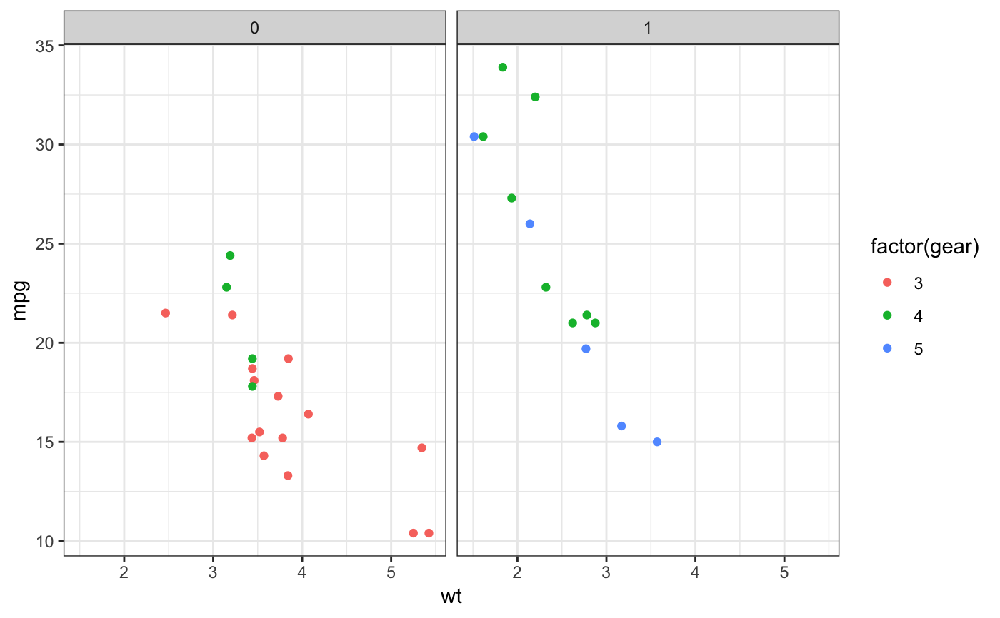
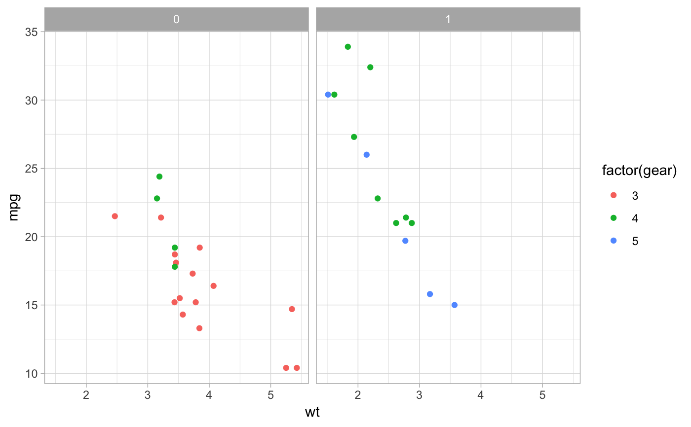
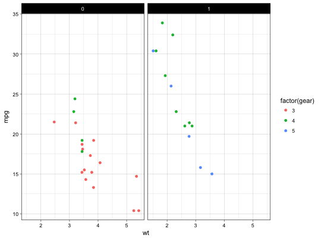
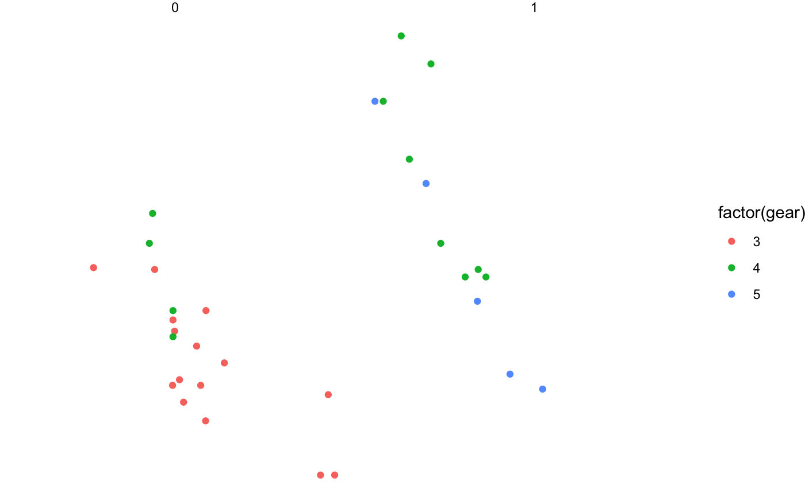
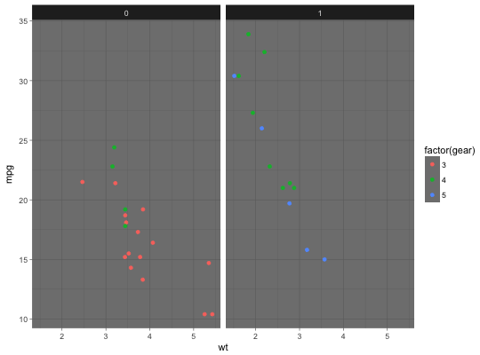
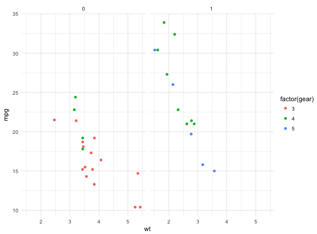
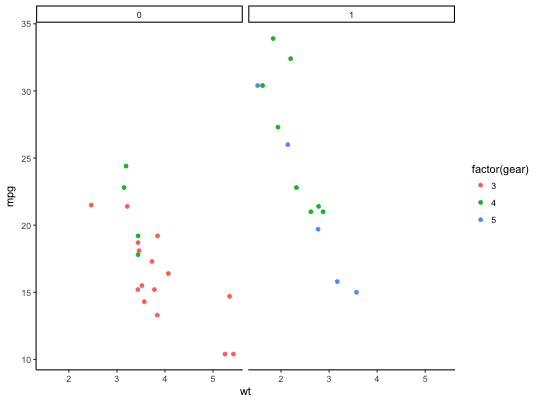
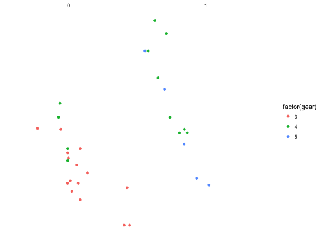
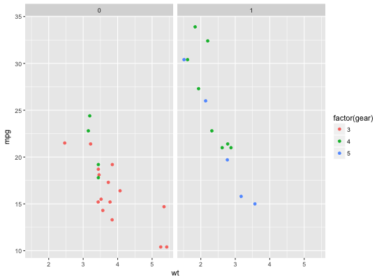

Themes set the general aspect of the plot such as the colour of the background, gridlines, the size and colour of fonts.
theme_grey(base_size = 11, base_family = "") theme_gray(base_size = 11, base_family = "") theme_bw(base_size = 11, base_family = "") theme_linedraw(base_size = 11, base_family = "") theme_light(base_size = 11, base_family = "") theme_dark(base_size = 11, base_family = "") theme_minimal(base_size = 11, base_family = "") theme_classic(base_size = 11, base_family = "") theme_void(base_size = 11, base_family = "")
base font size
base font family
theme_graytheme_bwtheme_linedrawtheme_bw.
Note that this theme has some very thin lines (<< 1 pt) which some journals
may refuse.theme_lighttheme_linedraw but with light grey lines and axes,
to direct more attention towards the data.theme_darktheme_light, with similar line sizes but a dark background. Useful to make thin coloured lines pop out.theme_minimaltheme_classictheme_voidp + theme_bw()p + theme_linedraw()p + theme_light()p + theme_dark()p + theme_minimal()p + theme_classic()p + theme_void()p + theme_gray() # default theme